← Index · ← Previous · Next →
Authors: Claudio Pellitteri, Rajiuddin Sk, Marcello Caleffi, Angela Sara Cacciapuoti
Type: theory · Category: quantum information and computing · PDF: https://arxiv.org/pdf/2605.02564v1
Analysis basis: full PDF text, analyzed in chunks
Topic relevance: entanglement & information structure 3/5 · interference shaping light 3/5
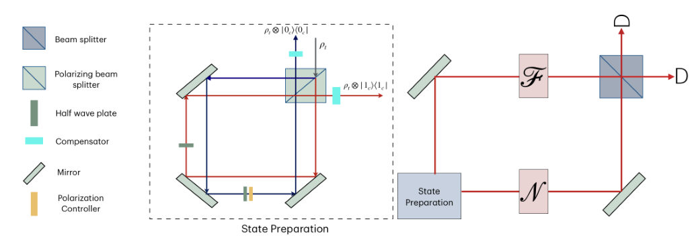
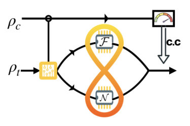
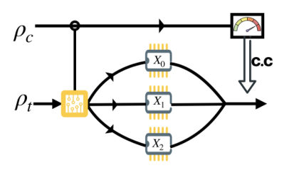
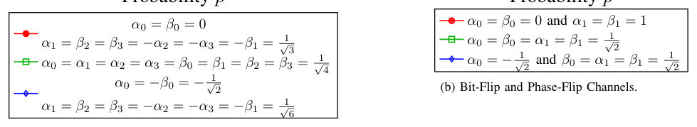
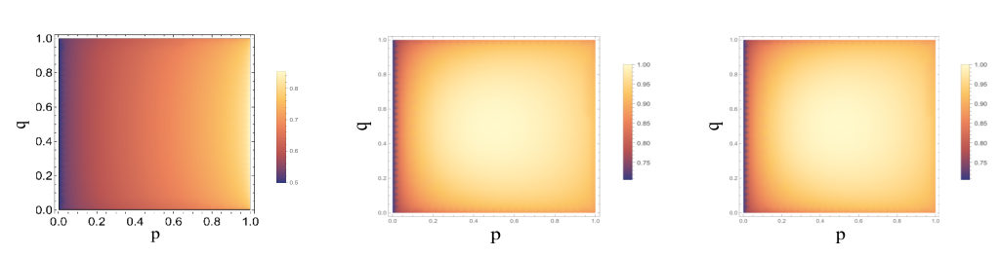
Summary. This paper shows that by superposing different communication paths, one can use quantum noise to generate entanglement between previously separable states. It proves that Bell and GHZ states can be created deterministically even in highly noisy or entanglement-breaking regimes. This provides a new method for distributed entanglement engineering in quantum networks.
Why it may be interesting. This work is highly relevant to quantum optics and open quantum systems as it proposes a paradigm shift where environmental noise, typically seen as a source of decoherence, is actively utilized as a constructive resource for entanglement engineering.
Main problem. The challenge of entanglement degradation due to noise during distribution in quantum networks and whether quantum noise can be harnessed as a resource for entanglement generation.
Main result. The authors demonstrate that the coherent superposition of spatially distinct, noisy communication links can deterministically transform separable states into entangled Bell, GHZ, and W states, even in extreme noise regimes.
Method. The study uses a mathematical framework of spatial superposition of channels, employing Kraus operators, vacuum extensions, and optimization of vacuum amplitudes to engineer interference patterns.
Model / system. A quantum communication framework involving the coherent superposition of spatially distinct links (e.g., via interferometric setups like Sagnac or Mach-Zehnder) where a control system (qubit/qudit) governs the propagation of a target system through noisy channels.
Key observables. Fidelity (to Bell, GHZ, and W states) and Concurrence.
Important parameters / regimes. Noise probabilities (p, q) of depolarizing and bit/phase-flip channels, and vacuum amplitudes (alpha, beta) representing the physical configuration of the links.
Assumptions / limitations. The method assumes that any relative phases introduced by different measurement outcomes or system sizes can be corrected via local unitary operations at the receiver.
Figures summary. Figure 1 shows a photonic setup for spatial superposition; Figure 2 and 3 illustrate the superposition of two and three links respectively; Figure 4 shows fidelity vs. noise probability; Figure 5 shows density plots of fidelity; Figure 6 shows concurrence vs. noise; Figure 7 and 8 show GHZ and W state generation via fidelity and concurrence.
Paper structure. The paper identifies the problem of noise-induced decoherence, proposes the spatial superposition framework, compares it to the Quantum Switch and Quantum Walks, details the deterministic generation of Bell, GHZ, and W states, and provides analytical proofs and numerical optimizations for various noise regimes.
The exploitation of quantum coherence at the level of propagation represents a powerful paradigm for quantum communication networks. In this work, we show that the coherent superposition of spatially distinct communication links enables entanglement generation inherently during distribution. Specifically, separable quantum states can be deterministically transformed into entangled states, when the noisy communication links they traverse are coherently superposed. Contrary to the conventional view of noise as a detrimental effect, we demonstrate that quantum noise itself can be transformed into a constructive resource for entanglement generation for both bipartite and multipartite entanglement. Given the practical feasibility of implementing spatial superposition in interferometric setups, our approach provides a feasible method for distributed entanglement engineering, opening new directions for quantum communication and networked quantum technologies.
Authors: Thierry Bodineau, Bernard Derrida
Type: theory · Category: statistical mechanics · PDF: https://arxiv.org/pdf/2605.01900v1
Analysis basis: full PDF text, analyzed in chunks
Topic relevance: non-equilibrium dynamics 3/5 · non-equilibrium universality 3/5
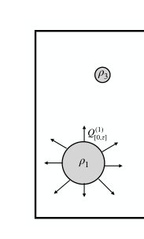
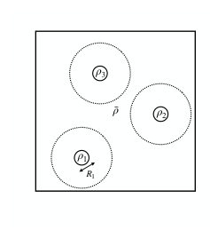
Summary. This paper explores how the dimensionality of a system affects the transport properties of particles driven by reservoirs. It identifies a breakdown of universality in 3D for microscopic contacts but proposes that mesoscopic-sized reservoirs restore predictable macroscopic behavior.
Why it may be interesting. not directly relevant
Main problem. Investigating how the dimensionality and geometry of reservoir contacts influence the current and non-equilibrium behavior of particle systems, specifically addressing why universality fails in 3D for point contacts.
Main result. The authors show that in 2D, three coupling regimes exist, whereas in 3D and higher, only a weak coupling regime exists that is sensitive to microscopic contact structure; however, universality is restored for mesoscopic reservoirs.
Method. The study utilizes the Green function approach, scaling analysis of reservoir rates, and the macroscopic fluctuation theory (additivity principle) to analyze steady-state density and current.
Model / system. The Symmetric Simple Exclusion Process (SSEP) on a d-dimensional lattice connected to reservoirs at specific sites or mesoscopic regions.
Key observables. Mean current (J), particle density profiles, and current fluctuations (large deviations/cumulants).
Important parameters / regimes. Dimension (d=1, 2, or >=3), coupling strength (A, B), reservoir densities (rho_a, rho_b), and contact size (point vs. mesoscopic).
Assumptions / limitations. The analysis focuses on the SSEP model in a steady state and assumes the validity of the additivity principle for mesoscopic reservoirs.
Figures summary. Figure 2 illustrates three mesoscopic reservoirs in a bulk, showing localized density variations near the reservoirs and a constant bulk density.
Paper structure. The paper begins by defining the SSEP model and reservoir dynamics, moves to a dimension-dependent analysis of coupling regimes (1D, 2D, 3D), explores current fluctuations and large deviations, and concludes with an extension of the additivity principle for multiple mesoscopic reservoirs.
The non-equilibrium behavior of particle systems driven by reservoirs has been extensively studied in recent years. In one dimension, various regimes have been explored depending on the coupling strength to the reservoirs. In this paper, we investigate the role of the dimension and of the geometry of the contacts with the reservoirs. For the symmetric simple exclusion process with point contact reservoirs, we show that in dimension 2, as in one dimension, three different regimes occur depending on the coupling strength. On the other hand in dimensions 3 and higher, there exists only a weak coupling regime which is very sensitive to the microscopic structure of the contacts. We then argue that for reservoirs with mesoscopic size contacts the macroscopic fluctuation theory remains in force and we propose an extension of the additivity principle for multiple mesoscopic reservoirs.
Authors: Cedric Gaberle, Manpreet Singh Jattana
Type: theory · Category: quantum information and computing · PDF: https://arxiv.org/pdf/2605.02494v1
Analysis basis: full PDF text, analyzed in chunks
Topic relevance: entanglement & information structure 3/5 · analog quantum simulation 2/5
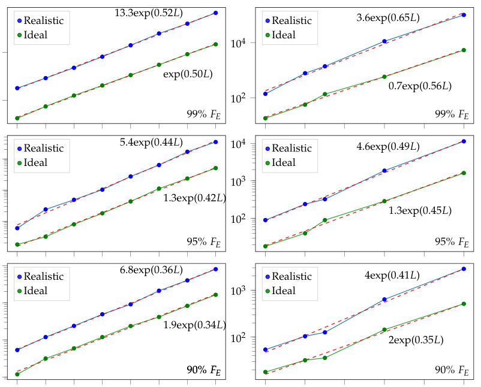
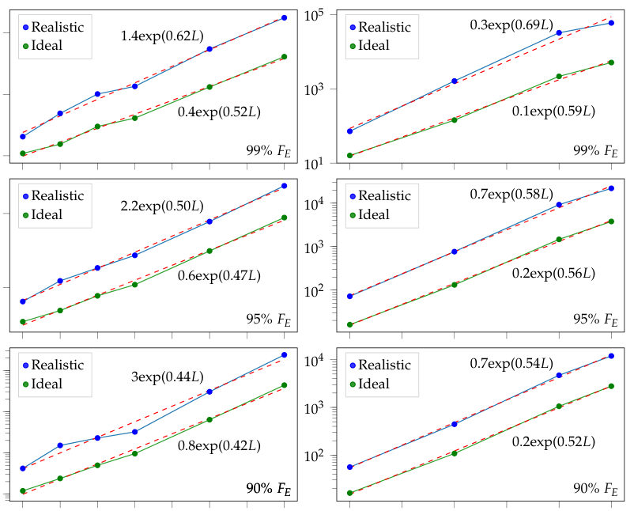
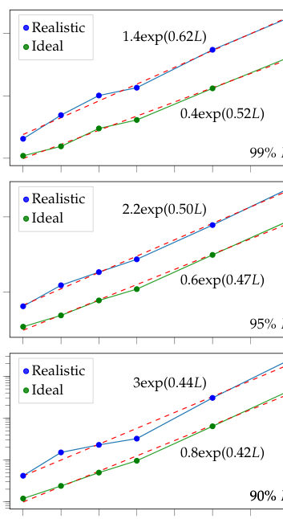
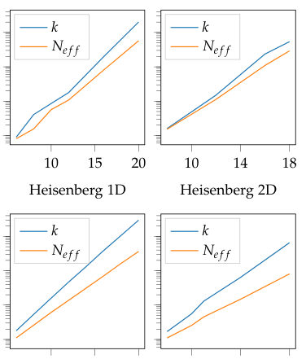
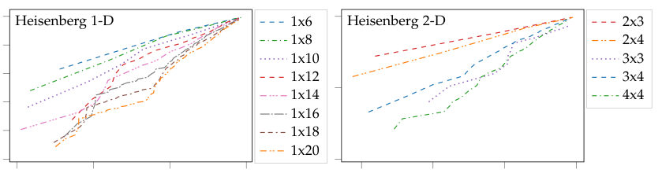
Summary. This paper demonstrates that Sample-Based Quantum Diagonalization (SQD) faces an exponential scaling bottleneck for Heisenberg and Hubbard models. The authors prove that this difficulty arises from the intrinsic complexity and delocalization of the many-body wavefunctions rather than errors in quantum sampling. Consequently, successful scalable subspace methods will likely require more sophisticated basis constructions beyond simple configuration sampling.
Why it may be interesting. This paper is highly relevant for researchers developing quantum algorithms for many-body physics, as it identifies a fundamental scaling barrier for a specific class of hybrid quantum-classical subspace expansion methods.
Main problem. The study investigates whether Sample-Based Quantum Diagonalization (SQD) is fundamentally scalable by determining if the required number of computational basis configurations grows polynomially or exponentially with system size.
Main result. The number of configurations required for accurate energy estimation grows exponentially with system size, a limitation driven by the intrinsic delocalization and configuration-space entropy of the many-body wavefunction rather than sampling inefficiencies.
Method. The authors use an idealized numerical approach, comparing deterministic inclusion of configurations (ordered by probability) against stochastic sampling using exact ground-state wavefunctions from classical diagonalization.
Model / system. The study focuses on 1D and 2D Heisenberg (antiferromagnetic spin-1/2) and Hubbard (fermionic, intermediate coupling U=2t) models on various lattice geometries.
Key observables. Ground-state energy fidelity (FE), configuration count (k), Shannon entropy (S), and cumulative probability mass.
Important parameters / regimes. System size (L), energy fidelity thresholds (90%, 95%, 99%), and interaction strength (U/t).
Assumptions / limitations. The study assumes access to the exact ground-state wavefunction to isolate intrinsic wavefunction properties from errors in state preparation and measurement.
Figures summary. Figure 1 shows exponential growth of required samples vs. system size for Heisenberg models; Figure 4 plots energy fidelity against cumulative probability mass; Figure 5 demonstrates that high-probability configurations are efficiently sampled, ruling out sampling inefficiency.
Paper structure. The paper introduces the SQD framework, defines the idealized simulation setup, presents scaling analysis for Heisenberg and Hubbard models, provides evidence that the bottleneck is intrinsic wavefunction delocalization, and concludes with implications for future subspace methods.
Sample-based quantum diagonalization (SQD) constructs subspaces from computational-basis configurations obtained via measurements of a quantum state, with the goal of approximating low-energy eigenspaces of many-body Hamiltonians. The effectiveness of this approach relies on the assumption that physically relevant states admit a compact representation in the computational basis. We investigate this assumption by analyzing SQD subspaces constructed directly from configurations of exact ground states of Heisenberg and Hubbard model lattices. By eliminating state-preparation and measurement inefficiencies, we isolate the intrinsic configuration-space structure of the wavefunction. We determine the minimal number of configurations required to reproduce the ground-state energy within fixed accuracy thresholds and find that this number grows exponentially with the system size. Notably, this scaling persists even under optimal inclusion of configurations in order of decreasing probability, demonstrating that it originates from intrinsic delocalization of the wavefunction rather than sampling inefficiencies. Our results indicate that SQD effectively probes the configuration-space entropy but faces fundamental scalability limitations for these models.
Authors: Kyle Foster, Shruti Majumdar, Mason Toombs, Harshit Agarwal, Daniel Fischer
Type: experiment · Category: other · PDF: https://arxiv.org/pdf/2605.02749v1
Analysis basis: full PDF text, analyzed in chunks
Topic relevance: interference shaping light 3/5 · quantum optics experiment 2/5
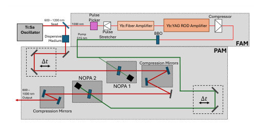
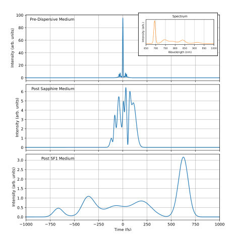
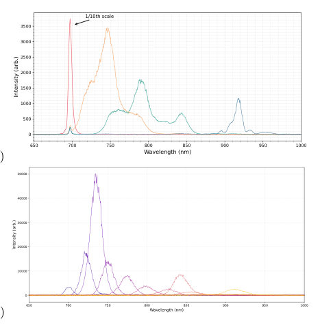
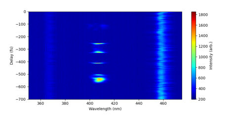
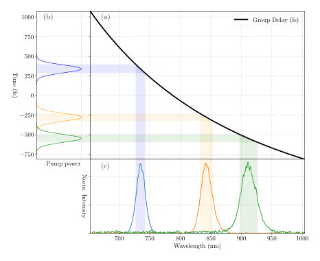
Summary. The authors developed a new method to create two-color femtosecond pulses where the frequency and timing of each color can be controlled independently. By using a chirped seed, they can select specific parts of the spectrum to amplify. They proved the effectiveness of this source by using it to precisely map out different ionization pathways in trapped lithium atoms.
Why it may be interesting. This work provides a highly controllable tool for studying light-matter interactions in the strong-field regime, specifically enabling the study of complex, multi-photon excitation pathways in atoms using independently tunable bichromatic fields.
Main problem. The need for an ultrafast light source that provides independent, programmable control over the spectral composition and relative timing of two pulse components for bichromatic multiphoton ionization studies.
Main result. Demonstration of a delay-programmable two-color femtosecond source using chirped-seed NOPA, which allows for independent tuning of spectral components and inter-pulse delay, validated via COLTRIMS-based ionization of Li atoms.
Method. The researchers used a chirped-seed noncollinear optical parametric amplifier (NOPA) architecture, introducing controlled dispersion into the seed pulse to enable spectral selection via pump-seed delay.
Model / system. The experimental platform consists of a two-stage NOPA/OPCPA system using a Ti:sapphire oscillator and Yb-fiber/YAG rod-type pump, applied to trapped 6Li atoms in an all-optical trap for characterization.
Key observables. Electron energy spectra, nonlinear optical cross-correlation signals (SHG, SFG), and pulse duration/spectral width.
Important parameters / regimes. 200 kHz repetition rate, 735 nm and 840 nm spectral components, 60 fs pulse duration, and electron energy peaks at 0.8 eV, 0.98 eV, and 1.22 eV.
Assumptions / limitations. The study assumes that the observed multi-peak structure in characterization is due to external setup artifacts (dichroic mirrors) rather than intrinsic pulse properties.
Figures summary. Fig 1 shows the OPCPA schematic; Fig 2-3 illustrate pulse evolution and dispersion effects; Fig 4 compares spectral resolution between sapphire and SF1 glass; Fig 5 shows the spectral-to-temporal mapping mechanism; Fig 6-8 detail the optical characterization and D-scan setup; Fig 10 displays electron energy spectra as a function of delay.
Paper structure. The paper introduces the technical challenge, describes the modified NOPA architecture and dispersion-based tuning mechanism, presents optical characterization (cross-correlation and D-scan), validates the source using atomic ionization pathways in COLTRIMS, and concludes with future directions.
We demonstrate a delay-programmable two-color femtosecond source based on a chirped-seed noncollinear optical parametric amplifier. Introducing controlled dispersion into the seed enables spectral selection through pump-seed delay, allowing flexible generation of two independently tunable pulse components with adjustable relative timing at high repetition rate. The temporal and spectral properties are characterized using nonlinear optical cross-correlation and dispersion-scan measurements. As a benchmark application, the source is employed in a COLTRIMS-based multiphoton ionization experiment on trapped Li atoms, revealing delay-dependent ionization pathways and demonstrating its suitability for bichromatic ultrafast spectroscopy.
Authors: Shengjun Wu, Kaichen Zhong, Jeffery Wu
Type: theory · Category: quantum information and computing · PDF: https://arxiv.org/pdf/2605.02876v1
Analysis basis: full PDF text, analyzed in chunks
Topic relevance: entanglement & information structure 3/5 · quantum measurements 2/5
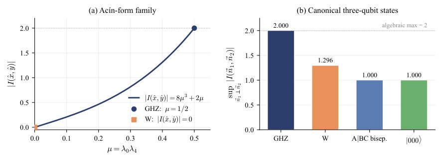
Summary. The paper introduces a new mathematical functional that quantifies how much a three-qubit state exhibits the GHZ algebraic paradox. This allows for a clear, quantitative distinction between GHZ and W-type entanglement. The method is also shown to be extensible to higher-dimensional qudit systems.
Why it may be interesting. It provides a new, quantitative, and device-independent tool for characterizing multipartite entanglement, which is crucial for verifying GHZ-type states in photonic or trapped-ion quantum computing platforms.
Main problem. Developing a quantitative, device-independent measure to identify and distinguish genuine tripartite entanglement, specifically focusing on GHZ-type correlations.
Main result. The authors introduce a functional $I$ that acts as a witness for GHZ-type entanglement, reaching a maximum of 2 for GHZ states and strictly less for W states, with a derived measure $E_{GHZ}$ that ranges from 0 to 1.
Method. The study uses algebraic construction of a real-valued functional from Pauli correlation expectation values, analytical optimization over measurement directions, and parameterization via the Acin canonical family.
Model / system. Three-qubit quantum systems, with proposed generalizations to three-qudit systems using Heisenberg-Weyl operators and spin-S systems.
Key observables. Three-qubit correlation expectation values (Pauli spin observables) and the functional $I(\vec{n}_1, \vec{n}_2)$.
Important parameters / regimes. Measurement directions $\vec{n}_1, \vec{n}_2$; the Acin canonical family parameters; the dimension $d$ for qudit generalization.
Assumptions / limitations. The measure is analyzed primarily within the context of local unitary equivalence and the GHZ/W entanglement classes; monotonicity under the full SLOCC hierarchy is not yet established.
Figures summary. Fig 1(a) shows the monotonic increase of the functional relative to state parameters; Fig 1(b) compares the supremum of the functional across different entanglement classes (GHZ, W, biseparable, and product states).
Paper structure. Introduction of the functional, proof of the universal upper bound, analysis of the Acin canonical family, comparison with the W state, generalization to qudits, and discussion of experimental feasibility.
We introduce a single real-valued functional $I(\vec{n}_1,\vec{n}_2)$, built from four three-qubit correlation expectation values, that turns the Greenberger--Horne--Zeilinger (GHZ) algebraic paradox into a \emph{quantitative} witness of genuine tripartite entanglement. We prove that for every three-qubit state $ρ$ and every pair of measurement directions $|I(\vec{n}_1,\vec{n}_2;ρ)|\le 2$, with the bound saturated if and only if the two measurement bases are mutually unbiased and $ρ$ is locally unitarily equivalent to the GHZ state. We obtain a closed-form expression for $I(\hat{x},\hat{y})$ on the five-parameter Acín canonical family of three-qubit pure states. For the W state we show that $I(\hat{x},\hat{y})=0$ and that $\max_{\vec{n}_1,\vec{n}_2}| I_{W}|=35/27\approx 1.296$, strictly below the GHZ value. The induced quantity ranges in $[0,1]$, equals one only on the GHZ class, and is therefore a device-independent indicator of GHZ-type genuine tripartite correlation. We also outline a generalisation of $I$ to three-qudit systems built from the Heisenberg--Weyl operators, recovering the standard qubit construction when $d=2$.
Authors: Ishaan Kannan, Harald Putterman, Jordan Cotler
Type: theory · Category: quantum information and computing · PDF: https://arxiv.org/pdf/2605.02057v1
Analysis basis: abstract only; PDF text extraction failed or PDF unavailable
Topic relevance: quantum measurements 3/5 · entanglement & information structure 2/5
Summary. This paper demonstrates that the exponential speedups of quantum learning can be preserved despite noisy experimental interfaces by using fault-tolerant quantum error correction to 'upload' states into encoded memory. The authors prove that this method outperforms adaptive classical strategies for tasks like shadow tomography and demonstrate its utility in a simulated astronomical imaging task.
Why it may be interesting. It addresses a critical bottleneck in quantum sensing and measurement—the interface between physical samples and quantum processors—and provides a theoretical pathway to maintain quantum advantages in noisy, real-world experimental settings.
Main problem. The noise introduced when coupling a quantum processor to an experimental sample can exponentially degrade the efficiency of quantum learning, even if the processor itself is fault-tolerant.
Main result. By using a 'quantum uploading' procedure to embed unknown systems into high-distance quantum codes, exponential speedups in tasks like classical shadow tomography and cubic observable estimation can be recovered, even with noisy uploading stages.
Method. The authors introduce the 'Heisenberg learning tree method' to derive learning lower bounds under noise constraints and propose a quantum uploading procedure into encoded memory.
Model / system. The paper discusses a general framework for learning from quantum experiments, specifically illustrating the application to astronomical imaging of photons to locate an exoplanet.
Key observables. Classical shadow tomography and the estimation of cubic observables.
Important parameters / regimes. Quantum code distance, noise levels in the uploading stage, and the number of experimental shots.
Assumptions / limitations. The efficiency gains assume the ability to embed the system into an arbitrarily high-distance quantum code with constant error overhead.
Paper structure. The paper introduces the problem of noise in quantum-experimental coupling, proposes the quantum uploading method, develops the Heisenberg learning tree method for lower bounds, and provides a numerical illustration using an astronomical imaging application.
Quantum information processing has the potential to substantially enhance how we learn from physical experiments, but coupling a quantum processor to an experimental sample introduces noise that can exponentially degrade learning even when the processor itself is fault-tolerant. In this work, we show that fault tolerance can nevertheless be leveraged to recover exponential speedups by embedding the unknown system into an arbitrarily high-distance quantum code with only constant error overhead and running a fault-tolerant learning algorithm. Using this $\textit{quantum uploading}$ procedure, we prove that both classical shadow tomography and the estimation of cubic observables can be performed exponentially faster than by any adaptive strategy that does not immediately upload the state into encoded memory. These separations hold even when the uploading stage is substantially noisier than the bare experimental interface. To prove them, we introduce the Heisenberg learning tree method, a flexible tool for obtaining learning lower bounds when the limited resource is not quantum replicas but an experimentally motivated constraint such as noise. We numerically illustrate the speedups in an astronomical imaging application, where quantum processing of individual uploaded photons locates an exoplanet obscured by a bright star using orders of magnitude fewer shots than unencoded baselines. Our results establish fault-tolerant quantum computation as a valuable tool for learning from quantum experiments.
Authors: Jianming Wen
Type: theory · Category: other · PDF: https://arxiv.org/pdf/2605.02873v1
Analysis basis: full PDF text, analyzed in chunks
Topic relevance: interference shaping light 3/5 · quantum measurements 2/5
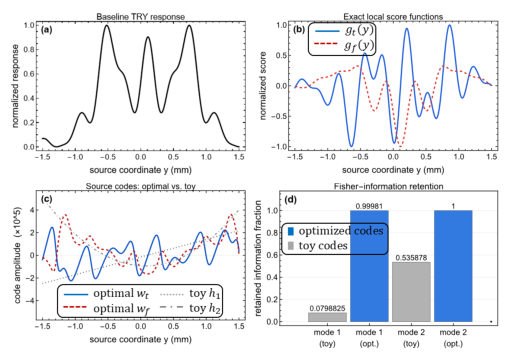
Summary. The paper proposes a method to monitor beam tilt and defocus using a fixed detector by applying optimized 'source codes' upstream in a Young interferometer. It proves that using physically accurate Fresnel-based codes enables near-perfect information recovery, whereas traditional Gaussian approximations fail significantly.
Why it may be interesting. This work is highly relevant to quantum optics and precision measurement, as it demonstrates how architectural changes (moving analysis upstream) can enable high-precision tracking of wavefront aberrations without complex downstream hardware.
Main problem. Developing an efficient method for simultaneous monitoring of beam tilt and focus drift in compact optical systems using a fixed-detector architecture.
Main result. Optimized upstream source codes derived from a Fresnel model allow for near-lossless information compression (retaining >99.98% of Fisher information) into just two scalar channels, significantly outperforming simple Gaussian-based toy models.
Method. The study uses a Fisher Information Matrix formalism to quantify information retention and employs a noise-weighted Gram-Schmidt orthogonalization process to derive optimal, fringe-locked source codes.
Model / system. A Time-Reversed Young (TRY) interferometer based on a monochromatic scalar field and a finite-width double-slit Fresnel diffraction model.
Key observables. Tilt-like and defocus-like phase perturbations, local response functions (sensitivity maps), and coded scalar observables.
Important parameters / regimes. Wavelength (633 nm), slit width and separation, propagation distances, and the shot-noise-limited detection regime.
Assumptions / limitations. Small phase perturbations (linearized regime), monochromatic scalar field, and shot-noise-limited detection with a regularizing background floor.
Figures summary. Figure 1 shows the baseline TRY intensity response, the exact local score functions for tilt and defocus, and the numerically optimized, oscillatory, fringe-locked source codes.
Paper structure. The paper introduces the sensing problem, defines the physical Fresnel model, derives the analytical response functions, implements the upstream source-coding optimization, and concludes with a comparative information-theoretic analysis against downstream sensing and Gaussian models.
We propose a physically explicit sensing application of a time-reversed Young (TRY) interferometer: simultaneous monitoring of beam tilt and focus drift with a fixed detector. The task is relevant to compact optical relays, free-space links, fiber-coupling stages, and micro-optical alignment modules, where continuous tracking of pointing and focus is needed but downstream wavefront cameras or multiport analyzers are undesirable. Using a finite-width double-slit Fresnel model, we derive the exact local TRY response functions for tilt-like and defocus-like phase perturbations and compute the corresponding optimal upstream source codes numerically. The physical optimal codes are fringe-locked and differ qualitatively from the simple odd/even modes suggested by Gaussian toy models. Two source-coded scalar channels recover essentially all local Fisher information in the full source-resolved TRY record for the physical model considered here. Compared with downstream direct intensity sensing, TRY provides first-order access to the mixed tilt--defocus task with fixed detection; compared with ideal downstream matched-mode sorting, its advantage is architectural rather than fundamental.
Authors: Pedro Portugal, Riku Tuovinen, Christian Flindt
Type: theory · Category: statistical mechanics · PDF: https://arxiv.org/pdf/2605.02322v1
Analysis basis: full PDF text, analyzed in chunks
Topic relevance: non-equilibrium dynamics 3/5 · Keldysh / 2PI / non-Gaussian methods 2/5
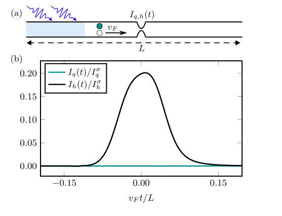
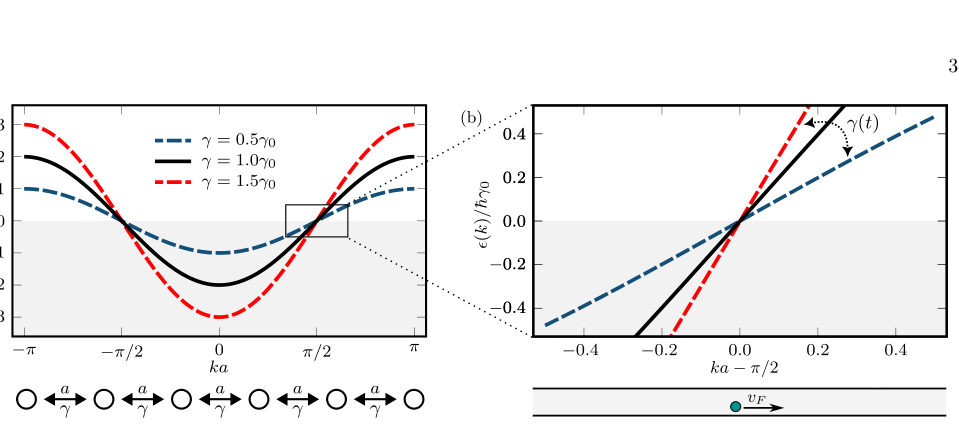
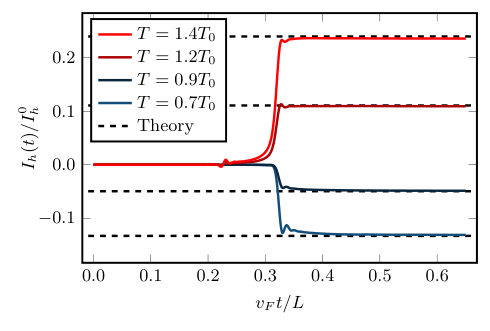
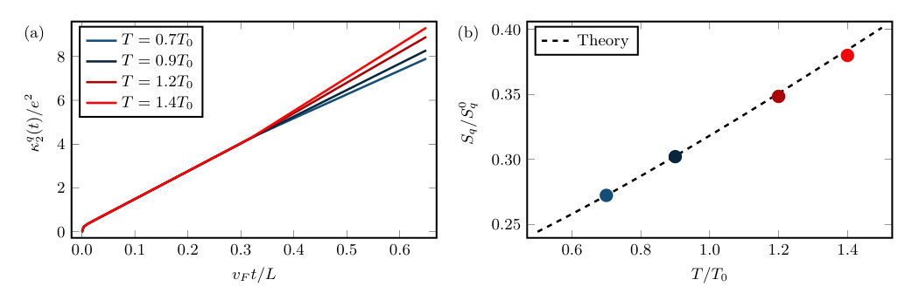
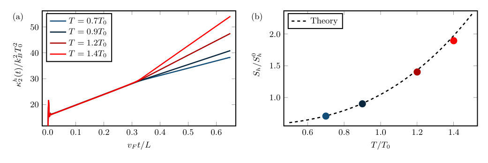
Summary. This paper proposes a method to generate controllable, charge-neutral heat pulses in mesoscopic conductors using light fields. By modulating the electronic temperature via light-induced changes in tunnel coupling, the authors establish a framework for energy-based quantum information processing. The results show that these pulses can be precisely controlled and even described using the Schwarzian derivative.
Why it may be interesting. It explores the intersection of non-equilibrium thermodynamics and quantum transport, specifically how time-dependent driving can be used to manipulate energy flow (caloritronics) independently of charge flow.
Main problem. The paper addresses the need for a way to generate and control time-dependent, charge-neutral heat pulses in mesoscopic conductors to enable 'on-demand caloritronics'.
Main result. The authors demonstrate that a high-frequency light field can modulate the electronic temperature in a reservoir, creating traveling heat pulses that carry energy without net electric current.
Method. The study uses a tight-binding model, full counting statistics (FCS), and Floquet scattering theory, supplemented by Conformal Field Theory to derive quantum corrections.
Model / system. A 1D mesoscopic conductor consisting of two electronic reservoirs connected by a quantum point contact (QPC), modeled as a tight-binding chain irradiated by a monochromatic light field.
Key observables. Time-dependent heat current (Ih), electric current (Iq), heat noise, and the second cumulant of transferred charge and energy.
Important parameters / regimes. High-frequency limit (light frequency Omega much larger than tunnel coupling gamma), driving amplitude alpha, Fermi velocity vF, and base temperature T0.
Assumptions / limitations. The light field is treated in the high-frequency limit (Omega >> gamma) with a spatially uniform field approximation (wavelength lambda >> lattice spacing a).
Figures summary. Figure 1 shows the schematic of heat pulse generation; Figure 2 shows the effect of light on band structure; Figure 3 displays time-dependent heat current under constant light; Figure 4 and 5 show the evolution of charge and heat noise/cumulants.
Paper structure. The paper introduces the problem of heat pulse generation, describes the tight-binding model and light-matter interaction, presents the derivation of effective temperature modulation, evaluates observables using FCS, and concludes with the implications for caloritronics.
We propose to generate heat pulses in mesoscopic conductors using light fields. In contrast to single-electron excitations such as levitons, which are created by accurate voltage drives, our approach relies on modulating the temperature of an electronic reservoir. To this end, we show that the interactions with a light field can induce a controllable time-dependent temperature in an electrode. The temperature modulations generate charge-neutral heat pulses that can be emitted into a mesoscopic conductor and detected in the outputs. We illustrate our approach by evaluating the time-dependent currents and their fluctuations using a tight-binding model of two electronic reservoirs connected by a quantum point contact. Our work establishes a route towards on-demand caloritronics, where energy rather than charge carries quantum information, and it paves the way for probing time-resolved heat transport and quantum coherence in thermally driven conductors.
Authors: Hyunho Cha, Jungwoo Lee
Type: theory · Category: quantum information and computing · PDF: https://arxiv.org/pdf/2605.01433v1
Analysis basis: abstract only; PDF text extraction failed or PDF unavailable
Topic relevance: entanglement & information structure 3/5 · quantum measurements 2/5
Summary. This paper introduces a more efficient way to calculate entanglement-related quantities (PT moments) using classical shadows. By exploiting the local structure of quantum measurements, the authors reduce the computational complexity from cubic to subcubic scaling, enabling the analysis of larger quantum systems.
Why it may be interesting. not directly relevant
Main problem. The computational cost of updating partial-transpose (PT) moments in the classical shadows framework scales cubically with the Hilbert space dimension, making it inefficient for large systems.
Main result. The authors present a subcubic-time update algorithm for PT-moment estimators that maintains the same memory requirements as previous methods by exploiting the factorized structure of incoming snapshots.
Method. The method utilizes an online framework where accumulated matrices are updated via exact column-pair sweeps, leveraging the fact that fresh partially transposed snapshots remain factorized into local factors.
Model / system. The paper focuses on the framework of local Pauli classical shadows used for estimating nonlinear properties of quantum states.
Key observables. Partial-transpose (PT) moments, used for entanglement certification and phase diagnostics.
Assumptions / limitations. The algorithm assumes the use of local Pauli classical shadows and that the incoming snapshots can be treated as factorized local operators.
Paper structure. The paper introduces the problem of cubic scaling in PT-moment updates, proposes a subcubic solution using column-pair sweeps on factorized snapshots, and provides an optimized Pauli basis update for the second PT moment.
Partial-transpose (PT) moments are among the most practically relevant nonlinear quantities accessible from local Pauli classical shadows, because they directly underpin mixed-state entanglement certification and recent PT-moment-based phase diagnostics. The online framework of Marso \emph{et al.} rewrote the exact PT-moment statistic into a fixed-memory recurrence that updates a small collection of accumulated matrices after each new shadow snapshot. Its update cost is independent of the shot number, but each step treats the incoming partially transposed snapshot as a generic dense matrix. Therefore, the arithmetic cost scales cubically with the dimension of the Hilbert space. We show that the same estimator can be updated exactly in subcubic time per shot while retaining the same memory. The key point is that the accumulated matrices become dense, but the fresh partially transposed snapshot still factorizes into local factors. Right-multiplication by that factorized snapshot can therefore be executed by exact column-pair sweeps. For the second PT moment, we further optimize the process by utilizing a Pauli basis update.
Authors: Paul C. A. Hagen, Thomas Bracht, Mathieu Bozzio, Moritz Cygorek, Doris E. Reiter, Philip Walther, Vollrath M. Axt
Type: theory · Category: quantum information and computing · PDF: https://arxiv.org/pdf/2605.02490v1
Analysis basis: full PDF text, analyzed in chunks
Topic relevance: methods for driven-dissipative 3/5 · non-equilibrium dynamics 2/5
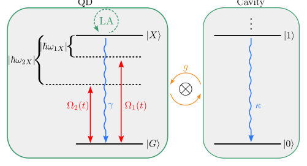
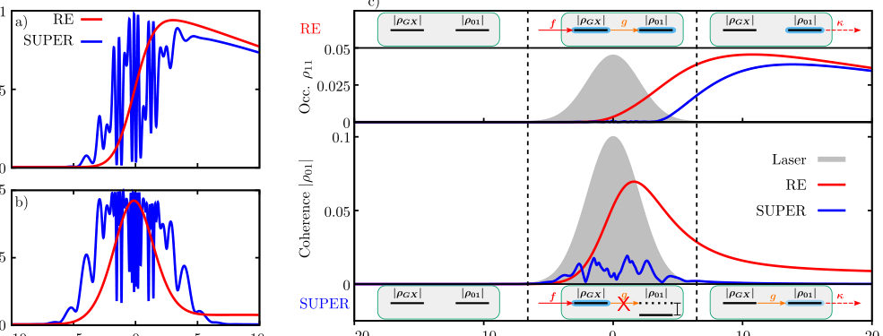
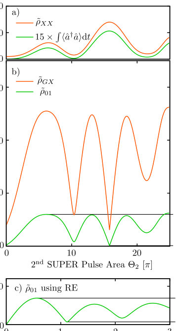
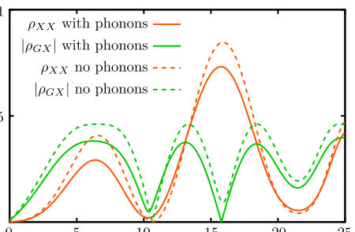
Summary. The paper shows that the SUPER excitation scheme can reduce photon number coherence in quantum dot-cavity systems by using a laser-induced Stark shift to decouple the dot from the cavity during excitation. This reduction is beneficial for certain quantum cryptographic protocols like BB84. The study also quantifies how phonon-induced effects contribute to the loss of coherence.
Why it may be interesting. This work is highly relevant for researchers in quantum optics and open quantum systems as it demonstrates how specific laser-driven protocols can be used to manipulate photonic coherence and decouple light-matter interaction via the Stark shift.
Main problem. Investigating how the SUPER (Swing-UP of quantum EmitteR population) excitation scheme affects the photon number coherence (PNC) of a quantum dot-cavity system, which is a critical metric for quantum cryptography security.
Main result. The SUPER scheme significantly decreases the PNC compared to resonant excitation because a laser-induced Stark shift effectively decouples the quantum dot from the cavity during the excitation pulse.
Method. Numerical solution of the Lindblad-form von Neumann equation using the process tensor matrix product operators implemented in the ACE code, accounting for phonon-induced dephasing.
Model / system. A two-level quantum dot embedded in a single-mode photonic microcavity, coupled to a longitudinal acoustic (LA) phonon environment and subject to radiative/cavity losses.
Key observables. Photon number coherence (PNC), QD electronic occupation, electronic coherence, and cavity Fock state occupation.
Important parameters / regimes. Pulse duration (2 ps), temperature (4.2 K), coupling strength (g = 0.05 meV), and laser-induced Stark shift.
Assumptions / limitations. The system is modeled with up to two photons in the cavity and the phonon environment is treated via a pure-dephasing Hamiltonian.
Figures summary. Fig 1 shows the level scheme and physical processes; Fig 2 compares QD occupation, electronic coherence, and cavity dynamics between RE and SUPER schemes; Fig 3 shows integrated QD/cavity dynamics; Fig 4 demonstrates the impact of phonons on the decay of occupation and coherence.
Paper structure. The paper introduces the problem of PNC in quantum cryptography, describes the physical model and the SUPER excitation scheme, presents numerical results comparing SUPER to resonant excitation, analyzes the role of the Stark shift and phonons, and concludes with the implications for quantum key distribution.
To fulfill the security requirements of quantum cryptography, photon number coherence (PNC) of single photon sources has recently become an important figure of merit. Quantum dots (QDs) embedded in photonic microcavities offer a mature source of single photons, of which many properties can be tuned by the use of different excitation protocols or parameters. We show that the Swing-UP of quantum EmitteR population (SUPER) scheme can significantly decrease the PNC of the emitted photon, compared to resonant excitation. The reason for this is a laser-induced Stark shift, which effectively decouples the QD from the cavity during the SUPER excitation. Our calculations account for environmental effects such as phonons and radiative losses.
Authors: Musung Kang
Type: theory · Category: quantum information and computing · PDF: https://arxiv.org/pdf/2605.01953v1
Analysis basis: full PDF text, analyzed in chunks
Topic relevance: entanglement & information structure 3/5 · non-equilibrium dynamics 2/5
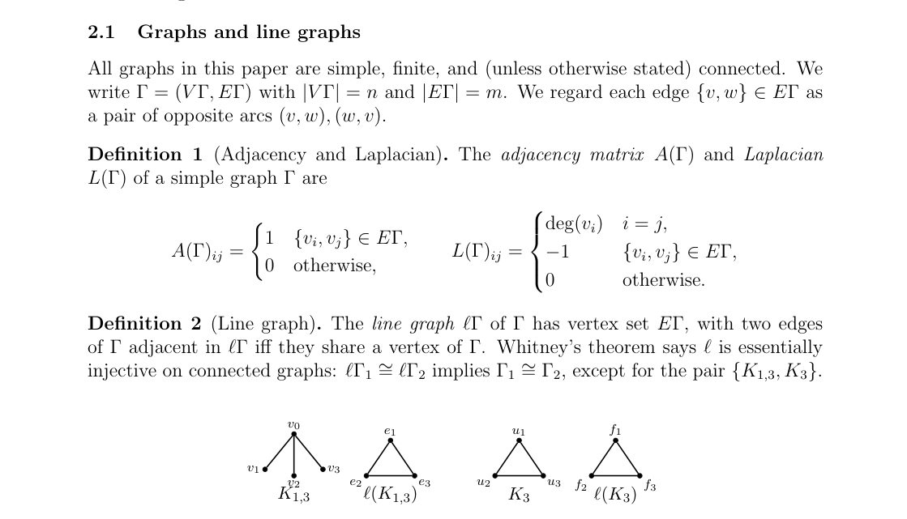
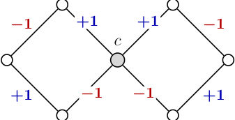
Summary. This paper introduces 'Schur states' to relate the long-term behavior of quantum walks on line graphs to the spanning-tree counts of the underlying graphs. It establishes a precise mathematical identity for the weighted tree count under uniform commutative states and links entropy preservation to the commutativity of the quantum state.
Why it may be interesting. It connects quantum dynamics (CTQW) to classical graph theory and provides a new way to use quantum walk observables to extract structural combinatorial information about a graph.
Main problem. The paper investigates the relationship between continuous-time quantum walks (CTQW) on line graphs and classical combinatorial invariants, specifically relating the spanning-tree count of induced weighted graphs to the original graph.
Main result. The authors prove that for uniform commutative states, the weighted spanning-tree count of the induced graph scales by a specific factor related to the number of edges, and they identify the -2 eigenspace as a source of such states.
Method. The study uses the Schur state framework to package edge-state amplitudes into Hermitian matrices, employing spectral analysis, the Matrix-Tree Theorem, and algebraic graph theory.
Model / system. A continuous-time quantum walk on the line graph of a finite simple graph, where the Hamiltonian is the adjacency matrix of the line graph and the focus is on edge-state evolution.
Key observables. Von Neumann entropy, vertex spectral entropy, average mixing matrix, and weighted spanning-tree count.
Important parameters / regimes. Uniform commutative states, the -2 eigenspace (flat bands), and the dephasing limit (time-averaging).
Assumptions / limitations. The primary result holds specifically for 'uniform commutative' states; the study also considers the dephasing limit for time-averaging.
Figures summary. Figure 1 illustrates the Whitney exception regarding non-isomorphic graphs; Figure 2 provides an algorithmic flowchart for classifying Schur states.
Paper structure. The paper introduces the Schur state framework, defines the induced weighted graphs, establishes the main spanning-tree identity, characterizes commutative states via entropy preservation, and explores the existence of these states in the -2 eigenspace.
We introduce a family of complex-valued edge weights on a finite simple graph $\G$ arising from a continuous-time quantum walk on the line graph $\ell\G$, packaged as the \emph{Schur state}: an $n \times n$ Hermitian matrix encoding the amplitudes of an edge-state walk. The entrywise modulus square induces a real-weighted adjacency matrix $A(e)$ and Laplacian $L(e)$, and time-averaging yields a weighted graph whose spanning-tree count we relate to that of $\G$. Our main result is \[ tn\!\left(\G, \tfrac{1}{m}\right) = \frac{1}{m^{n-1}}\, tn(\G), \] valid whenever the initial edge state is \emph{uniform commutative}, where $n=|V\G|$, $m=|E\G|$, and $tn(\G, w)$ denotes the weighted spanning-tree count. We further identify a structural mechanism -- the $-2$ eigenspace of $\ell\G$ -- providing uniform commutative states beyond the regular case, in particular for line graphs of Eulerian graphs with an even number of edges. As a side result, we establish that commutative states are precisely the states whose von Neumann entropy is preserved under average mixing.
Authors: Davide Valentinis
Type: theory · Category: strongly correlated electrons · PDF: https://arxiv.org/pdf/2605.02625v1
Analysis basis: full PDF text, analyzed in chunks
Topic relevance: Keldysh / 2PI / non-Gaussian methods 3/5 · non-equilibrium dynamics 2/5
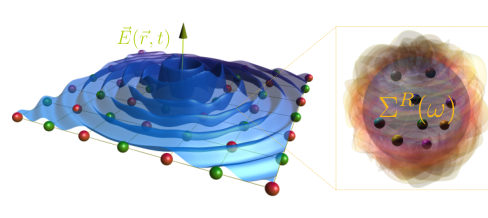
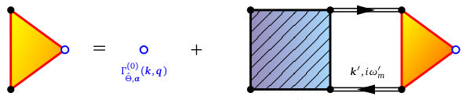
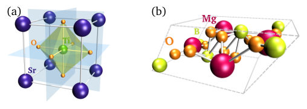
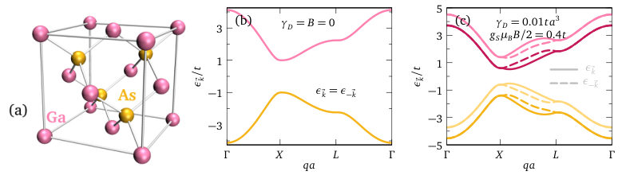
Summary. This paper develops a theoretical framework to calculate the nonlocal electrodynamic response of quantum fluids with local self-energies. It identifies specific symmetry criteria under which many-body vertex corrections vanish, providing exact results for transport coefficients like conductivity and viscosity. This is crucial for accurately modeling non-diffusive, hydrodynamic transport in strongly correlated materials.
Why it may be interesting. It provides exact symmetry-based selection rules for many-body vertex corrections, which is fundamental for anyone studying the transport properties and hydrodynamic regimes of strongly interacting quantum fluids.
Main problem. Determining the exact nonlocal electrodynamic response of strongly correlated quantum electron systems and establishing symmetry-based criteria for when vertex corrections vanish in the local self-energy limit.
Main result. The paper proves that vertex corrections vanish at q=0 if the bare vertex is odd under a symmetry operation that preserves the dispersion, and specifically that for quadratic isotropic dispersion, corrections to the current-current correlation function vanish at any q and frequency.
Method. Many-body linear-response theory using the Kubo formalism, Bethe-Salpeter equations for renormalized vertices, and the Luttinger-Ward functional within a DMFT-like local self-energy framework.
Model / system. Strongly correlated quantum electron systems, including Fermi liquids, non-Fermi liquids, strange metals, and Mott insulators, analyzed in the limit of local, frequency-dependent interactions.
Key observables. Two-particle correlation functions including density, currents (electric, momentum, thermal), momentum, stress, Hall viscosity, and kinetic stress tensor.
Important parameters / regimes. Momentum transfer (q), exchanged frequency (omega), electronic dispersion (epsilon_k), and point group symmetries (inversion, mirror, rotation).
Assumptions / limitations. Local, frequency-dependent (retarded) self-energy (DMFT limit), translational invariance in space and time, and adherence to charge and mass conservation laws.
Figures summary. Figure 1 illustrates a 2D electron liquid responding to an oscillating electric field; Figure 2 shows the Bethe-Salpeter equation structure; Figure 3 compares 3D crystal symmetries (e.g., cubic SrTiO3) and their effect on shear-stress vertex corrections.
Paper structure. The paper introduces the problem of nonlocal response, establishes the many-body framework using the Bethe-Salpeter equation, derives symmetry-based selection rules for vanishing vertex corrections, applies these rules to various tensors and crystal symmetries, and provides explicit expressions for Fermi and non-Fermi liquids.
In non-diffusive conduction regimes of strongly correlated quantum electron systems, electromagnetic perturbations simultaneously probe the electronic dynamics in time and space: the exchanged energy $\hbar ω$ excites retarded, i.e., frequency-dependent, many-body interactions, while the probing spatial modulation renders the response spatially nonlocal, i.e., dependent on the external wave vector $\vec{q}$. This work determines the exact nonlocal electrodynamic response of such dynamical quantum fluids under the assumptions of local, frequency-dependent interactions and charge/mass conservation. The latter is ensured by Bethe-Salpeter equations for renormalized interaction vertices, entering the Kubo formalism for two-particle correlation functions (e.g., for density, currents, momentum, stress). Within such framework, it is shown that vertex corrections generally vanish at $q=0$ for single-particle dispersions with inversion symmetry and for bare interaction vertices that are odd with respect to specific point group transformations in momentum space, including inversion for vector vertices, and mirror reflections or two- or higher-fold rotations for tensor vertices. In addition, for quadratic dispersion vertex corrections identically vanish from the current-current correlation function, at any momentum $\vec{q}$ and frequency $ω$. The robustness of these criteria against further symmetry breaking, multiband effects, and additionally imposing momentum conservation, is discussed, with application to the Hall viscosity of Landau levels. Explicit expressions for generic nonlocal correlation functions are derived for Fermi liquids (with well-defined quasiparticle peaks) and non-Fermi liquids (devoid of quasiparticles), for arbitrary local self-energies.
Authors: Erwan Don, Jessica Bavaresco, Patryk Lipka-Bartosik, Nicolas Gisin, Nicolas Brunner, Alejandro Pozas-Kerstjens
Type: theory · Category: quantum information and computing · PDF: https://arxiv.org/pdf/2605.00981v1
Analysis basis: full PDF text, analyzed in chunks
Topic relevance: entanglement & information structure 3/5 · quantum measurements 2/5
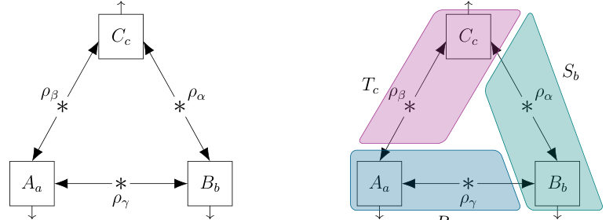
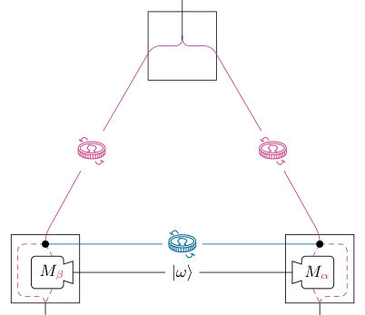
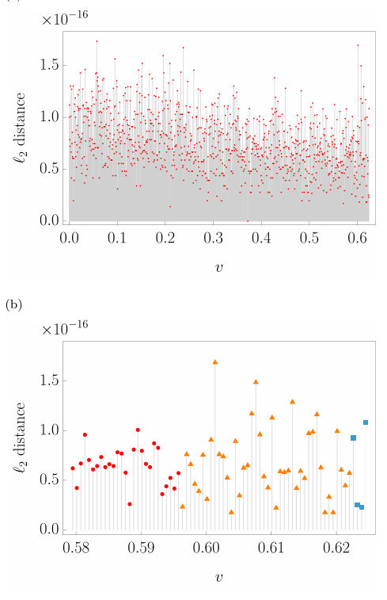
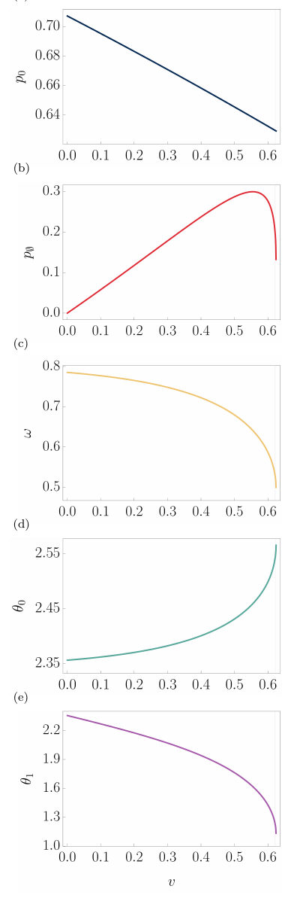
Summary. This paper demonstrates that the simplest possible quantum network—a triangle of three parties with no input choices and binary outcomes—can exhibit Bell nonlocality. By developing an efficient parameterization method, the authors provide an explicit quantum model that achieves this, establishing a new minimal benchmark for quantum network nonlocality.
Why it may be interesting. This work is highly relevant to quantum optics and quantum information as it identifies the fundamental limits of nonlocality in networked architectures and introduces new mathematical tools for characterizing multipartite correlations.
Main problem. Identifying the minimal network configuration capable of producing Bell nonlocality, specifically investigating if nonlocality can exist in a triangle network with no input choices and binary outcomes.
Main result. The authors prove that quantum Bell nonlocality is possible in the binary-outcome triangle network, establishing it as the smallest possible scenario for network nonlocality and disproving the conjecture that such a network must be local.
Method. The study uses an efficient 'quantum tester' formalism based on higher-order quantum operations, a seesaw-type optimization algorithm for semidefinite programs (SDPs), and inflation methods to prove nonlocality.
Model / system. A triangle network consisting of three parties (A, B, and C) connected by three bipartite sources. The model uses one entangled two-qubit source and two classical sources, where nonlocality is driven by the presence of a classical coin in the quantum source.
Key observables. Binary-valued outcomes (a, b, c) from local measurements.
Important parameters / regimes. Visibility parameter (v) of the target W-distribution, measurement angles, and the probability (p_phi) of the classical coin state.
Assumptions / limitations. The set of local distributions in networks is non-convex, meaning nonlocality is formally proven only for specific discrete values of visibility rather than a continuous interval.
Figures summary. Fig 1 shows the triangle network topology and the transformation into independent testers; Fig 2 illustrates the quantum model architecture with classical coins and entangled states; Fig 3 plots model parameters against visibility; Fig 4 shows the Euclidean distance between the model and target distributions.
Paper structure. The paper introduces the problem of minimal network nonlocality, defines the triangle network and target distributions, presents a new quantum tester formalism for efficient optimization, demonstrates the construction of a nonlocal quantum model, and analyzes the visibility thresholds and parameter regimes.
In recent years, the study of Bell nonlocality has been generalized to quantum networks, where multiple independent sources distribute physical systems to distant parties who perform local measurements. In this context, a central open question is to identify the minimal network configuration in which quantum resources produce Bell nonlocal correlations. Here we address this question and show that quantum nonlocality is possible in the triangle network where the parties have no input choices and produce only binary-valued outcomes. To do so, we start by identifying a family of target distributions and proving their nonlocality. Next, we construct an explicit quantum model that reproduces the target distributions to machine precision. For this, we develop an efficient method for parameterizing quantum distributions in networks, inspired by the formalism of higher-order quantum operations. When considering the number of observed variables and their cardinality, this constitutes the smallest scenario possible that supports quantum nonlocality in networks. Moreover, by analyzing the explicit quantum model, we obtain new insights into how nonlocal distributions can be generated in quantum networks.
Authors: Alberto Riccardi, Lorenzo Maccone
Type: theory · Category: quantum information and computing · PDF: https://arxiv.org/pdf/2605.01832v1
Analysis basis: full PDF text, analyzed in chunks
Topic relevance: entanglement & information structure 3/5 · quantum measurements 2/5
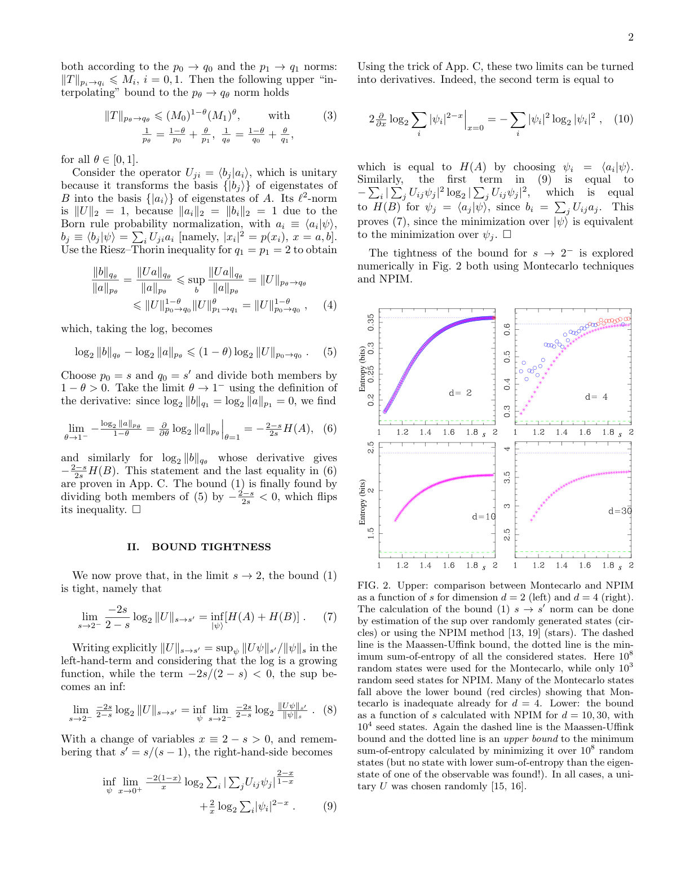
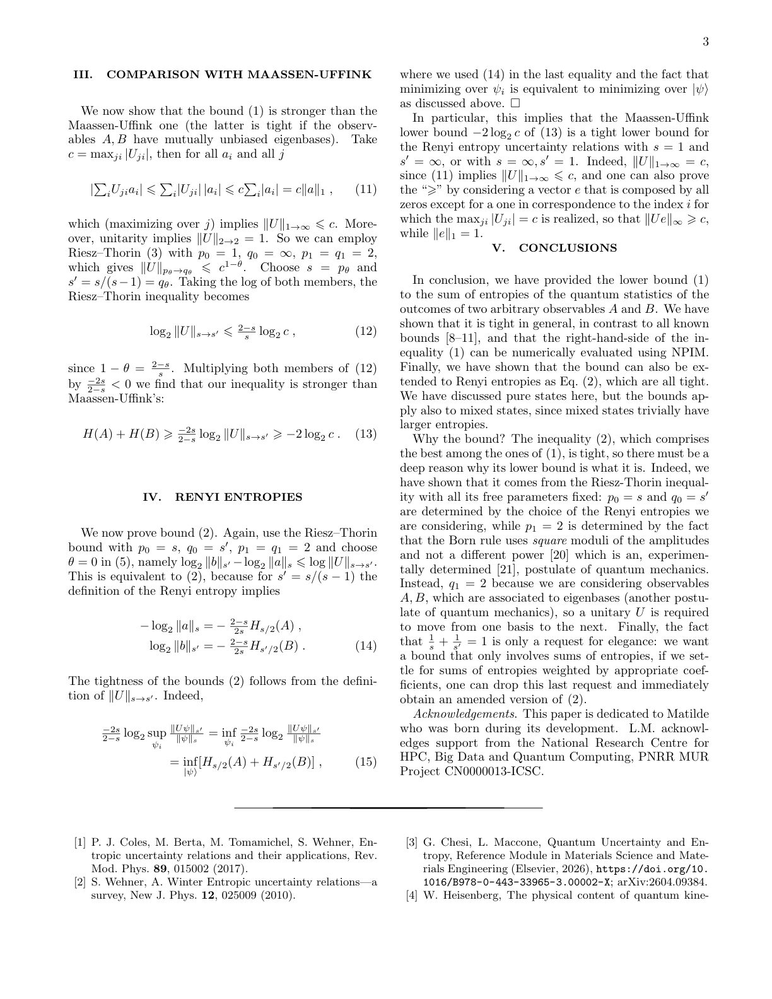
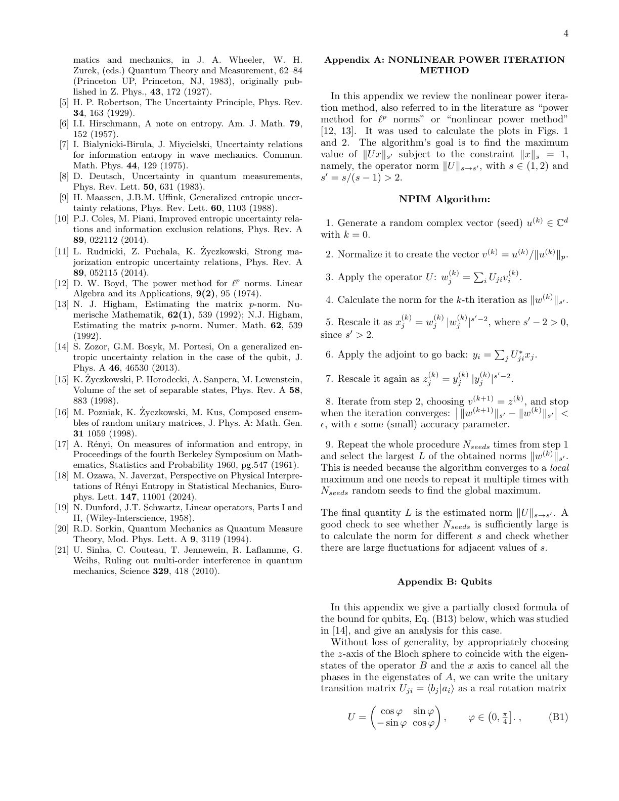
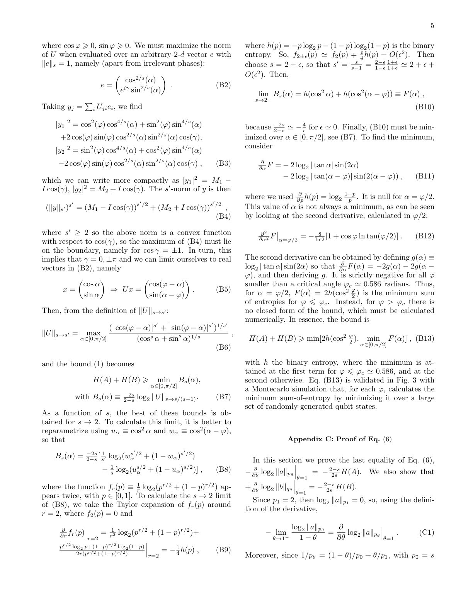
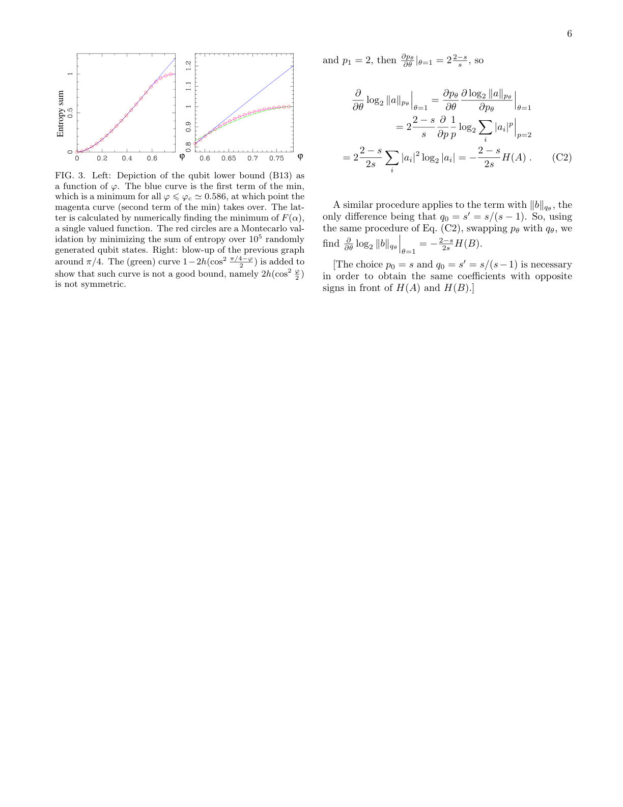
Summary. This paper introduces a new, tighter state-independent lower bound for entropic uncertainty relations that outperforms the standard Maassen-Uffink bound. By using the full overlap matrix instead of just the maximum overlap, the new bound becomes asymptotically tight in a specific limit. The result is applicable to both Shannon and Renyi entropies.
Why it may be interesting. This is highly relevant for quantum information because tighter uncertainty relations are fundamental to quantifying information processing limits, security in quantum key distribution, and characterizing the precision of quantum measurements.
Main problem. Improving the lower bound of entropic uncertainty relations (EUR) to be tighter than the standard Maassen-Uffink bound by utilizing the full structure of the overlap matrix.
Main result. The authors derive a new state-independent lower bound that is strictly stronger than the Maassen-Uffink bound and becomes asymptotically tight as a parameter s approaches 2. This bound can also be extended to Renyi entropies.
Method. The derivation utilizes the Riesz-Thorin Interpolation Theorem and the Nonlinear Power Iteration Method (NPIM) for calculating operator norms, with Monte Carlo simulations used for validation.
Model / system. The study considers general quantum systems described by two incompatible observables, A and B, where the relationship between their eigenbases is defined by a unitary overlap matrix U.
Key observables. Shannon entropy, Renyi entropy, and the overlap matrix elements between bases.
Important parameters / regimes. The parameter s in the interval (1, 2), the conjugate parameter s', and the rotation angle phi for the qubit case.
Assumptions / limitations. The bound is state-independent, meaning it applies to all possible quantum states of the system.
Figures summary. Figure 1 compares the new bound against Maassen-Uffink in large dimensions; Figure 2 compares NPIM and Monte Carlo methods for calculating norms; Figure 3 shows the qubit-specific bound as a function of the rotation angle phi, highlighting a transition at a critical angle.
Paper structure. The paper introduces the problem of EUR bounds, presents the new derivation using Riesz-Thorin interpolation, extends the result to Renyi entropies, provides a specific analysis for qubits, and validates the results through numerical methods and Monte Carlo simulations.
Entropic uncertainty relations $H(A)+H(B)\geqslant γ$ give a nonzero lower bound $γ$ to the sum of the Shannon entropies $H$ of the outcome probabilities of incompatible observables $A$ and $B$. They are better than the variance-based uncertainty relations because they only depend on the Born statistics of the outcomes and not on the outcomes themselves, and because bounds $γ$ typically are state independent. Here we provide a state-independent lower bound $γ_s$ that is better than the textbook Maassen-Uffink bound and, in the limit of the parameter $s\to 2$, becomes asymptotically tight for all $A,B$. The bound can be extended to Renyi entropies.
Authors: Benjamin Kraus, Sofia Herbers, Constantin Nauk, Uwe Sterr, Christian Lisdat, Piet O. Schmidt
Type: experiment · Category: other · PDF: https://arxiv.org/pdf/2605.02406v1
Analysis basis: full PDF text, analyzed in chunks
Topic relevance: quantum optics experiment 3/5 · QC/QI experiment 2/5
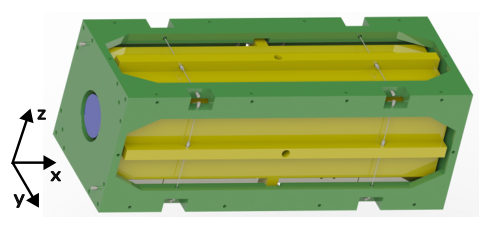
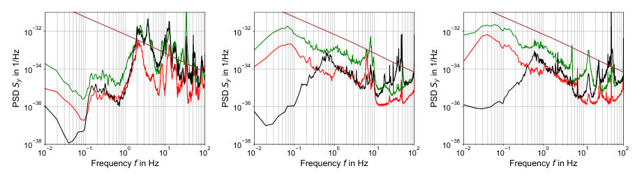
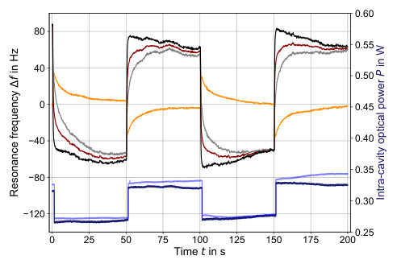
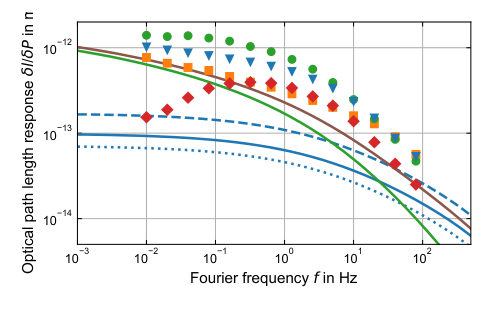
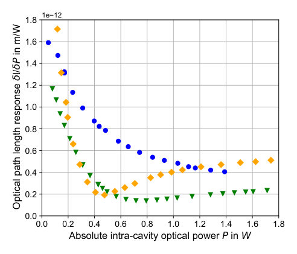
Summary. The paper presents a highly stable, transportable ultraviolet laser system designed for aluminum quantum logic clocks. By leveraging the opposite signs of photo-thermal and photo-birefringence noise, the researchers achieved significant noise cancellation. This advancement enables more robust and portable optical frequency standards for applications like geodesy and searches for new physics.
Why it may be interesting. This work is highly relevant to quantum optics and AMO physics as it demonstrates advanced techniques for controlling laser noise and stability, which are critical for the precision required in quantum logic clocks and fundamental physics tests.
Main problem. The need for ultra-stable, transportable ultraviolet (UV) laser systems to probe narrow-linewidth clock transitions in aluminum quantum logic clocks, specifically addressing frequency instability caused by the interplay between photo-thermal and photo-birefringence noise.
Main result. Demonstrated a portable UV laser system with a fractional frequency instability of approximately 2 x 10^-16 at 1 s, achieving noise mitigation through the partial cancellation of photo-thermal and photo-birefringence effects.
Method. The researchers used a frequency quadrupling system (two SHG stages) on a 1070 nm seed laser and analyzed the frequency response to power fluctuations using step changes and sinusoidal modulation of intra-cavity optical power.
Model / system. A portable UV laser system operating at 267.4 nm, utilizing an ultra-stable 20 cm cavity with crystalline AlGaAs/GaAs mirror coatings on fused silica substrates and ULE glass components.
Key observables. Fractional frequency instability (sigma_y), Power Spectral Density (PSD) of fractional frequency noise, acceleration sensitivity, and optical path length response.
Important parameters / regimes. Fractional frequency instability of 2 x 10^-16 at 1 s; cavity finesse of 2.02 x 10^5; UV output power up to 60 microWatts; acceleration sensitivity as low as 1 x 10^-12/(ms^-2).
Figures summary. Figure 4 compares the optical length response for fast and slow polarization axes and breaks down photo-thermal noise components; Figure 5 shows the response to sinusoidal modulation at different frequencies; Figure 6 compares the PSD of frequency noise against various noise sources and shows Allan deviation.
Paper structure. The paper introduces the requirement for UV clock lasers, describes the experimental setup (cavity, frequency quadrupling, and isolation), details the measurement of power-induced noise and its cancellation mechanism, and concludes with a performance comparison against existing stability limits.
Optical clocks require an ultra-stable laser to probe and precisely measure the frequency of the narrow-linewidth clock transition. We introduce a portable ultraviolet (UV) laser system for use in an aluminum quantum logic clock, demonstrating a fractional frequency instability of approximately $\mathrm{mod}\,σ_\mathrm{y} = 2 \times 10^{-16}$. The system is based on an ultra-stable cavity with crystalline AlGaAs/GaAs mirror coatings, alongside with a frequency quadrupling system employing two single-pass second harmonic generation (SHG) stages. Its acceleration sensitivity, measured in all three axes, does not exceed $4(2) \times 10^{-12}$/(ms$^{-2}$) and is among the lowest recorded for transportable systems to date. Additionally, partial cancellation between photo-thermal noise and photo-birefringence noise is used to effectively mitigate noise induced by intra-cavity optical power fluctuation at lower Fourier frequencies.
Authors: Andreas Stergiou, Nicolas PD Sawaya
Type: theory · Category: quantum information and computing · PDF: https://arxiv.org/pdf/2605.00979v1
Analysis basis: full PDF text, analyzed in chunks
Topic relevance: analog quantum simulation 3/5 · entanglement & information structure 2/5
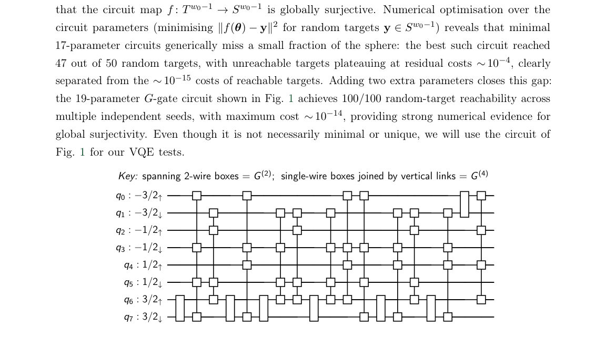
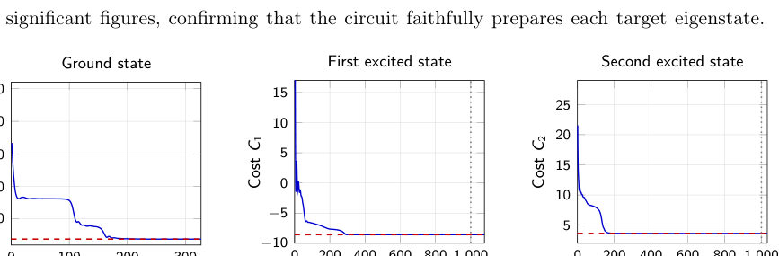
Summary. The paper proves that simple, hardware-efficient gates are sufficient to universally prepare any quantum state within a symmetry-constrained subspace. By using commutators to generate Pauli Z projectors, the authors show how local gates can span the full orthogonal and unitary algebras. This provides a robust toolkit for simulating bosonic and fermionic systems on noisy quantum computers.
Why it may be interesting. This is highly relevant for many-body dynamics and quantum simulation as it provides a rigorous mathematical foundation for using shallow, symmetry-preserving circuits to simulate complex physical models like Hubbard models and CFTs on near-term hardware.
Main problem. How to design efficient, hardware-efficient quantum gate ansatze that can achieve universal state preparation within symmetry-constrained subspaces (like fixed particle number) without the high circuit depth of non-local operations.
Main result. The authors prove that hardware-efficient multi-plane rotation gates are universal for real state preparation in constrained subspaces via a 'Pauli Z dressing' mechanism, and that adding complex phases extends this to the full SU(w) algebra.
Method. Lie algebraic techniques, specifically using the Lie algebra rank condition and commutator calculus to show that overlapping gates generate the necessary generators for the SO(w) and SU(w) groups.
Model / system. The framework is applied to the Binary Encoded Multi-level Particles Ansatz (BEMPA) for bosonic simulation and a fuzzy sphere regularization of the 3D Ising Conformal Field Theory (CFT) using a 4-qubit electron model.
Key observables. Scaling dimensions of the 3D Ising CFT, energy eigenvalues, and the Jacobian rank for verifying circuit completeness.
Important parameters / regimes. Dimension of the subspace (w), number of qubits (Nq), particle number (nq), and the interaction strength/magnetic field in the fuzzy sphere model.
Assumptions / limitations. The proof assumes the availability of continuous-parameter gates and that the circuit can navigate the subspace via a connected graph of bitstrings; it also notes that topological obstructions may still exist globally.
Figures summary. Figures show the decomposition of multi-qubit gates into CNOT and rotation gates, the architecture of a 19-parameter circuit, and convergence plots for VQE/VQD energy extraction.
Paper structure. The paper introduces the problem of constrained state preparation, develops a Lie algebraic framework for universality via Pauli Z dressing, provides a Jacobian criterion for verification, and demonstrates the framework through BEMPA completeness and 3D Ising CFT simulation.
Simulating physical systems on near-term quantum computers often requires preparing states within constrained subspaces, like those with fixed particle number or spin. We use Lie algebraic techniques to prove that hardware-efficient gates are universal for state preparation in these subspaces. The key mechanism is Pauli $Z$ dressing: commutators of overlapping gates produce Pauli $Z$ operators on shared qubits, acting as spectator projectors that decompose multi-plane rotations into single-plane generators spanning the full $\mathfrak{so}(w)$ algebra, where $w$ is the dimension of the constrained subspace, thereby guaranteeing universality for real state preparation. Adding independent complex phases extends this to $\mathfrak{su}(w)$, enabling arbitrary complex state preparation. We provide a computationally efficient Jacobian criterion for verifying that a circuit can explore any direction on the target manifold from almost any parameter configuration. Our findings are applicable to many problem areas, including Fermi-Hubbard models, Bose-Hubbard models, and molecular electronic structure. We apply our framework to two physical settings: we prove the completeness of the binary encoded multi-level particles ansatz on the conserved-particle-number subspace, and we construct symmetry-preserving circuits for the fuzzy sphere regularisation of the 3D Ising conformal field theory (CFT). For the latter, we variationally prepare the ground and excited states to extract CFT scaling dimensions.
Authors: Rafael B. Frigori
Type: theory · Category: other · PDF: https://arxiv.org/pdf/2605.02792v1
Analysis basis: abstract only; PDF text extraction failed or PDF unavailable
Topic relevance: entanglement & information structure 3/5
Summary. This paper proposes that black hole evaporation does not require a return to standard associative tensor-product factorization to resolve the AMPS paradox. Instead, it suggests that the evaporation process possesses an 'exceptional memory' derived from octonionic supergravity. This memory-driven approach allows for the reconstruction of the Page curve through a non-associative algebraic framework.
Why it may be interesting. not directly relevant
Main problem. The paper addresses the AMPS paradox regarding the entanglement structure and tensor-product factorization of Hawking radiation, early radiation, and interior partners during black hole evaporation.
Main result. The study proposes that black hole evaporation follows an Albertian algebraic-quantum description where an exceptional memory law (Volterra type) replaces the need for restored tensor factorization, successfully reconstructing the Page curve.
Method. The author utilizes the framework of octonionic magical supergravity and Peirce theory applied to the Albert algebra J3(O) to derive a memory-dependent evolution of the horizon data.
Model / system. The system is a Reissner-Nordstrom black hole undergoing evaporation, modeled via an attractor sector of octonionic magical supergravity where horizon symbols form the Albert algebra.
Key observables. windowed helicity/Stokes observables, spectral-overlap connected two-time coherence, and the Page-curve envelope.
Important parameters / regimes. Reissner-Nordstrom evaporation trajectory, Euclidean time limits (Tsallis/Lomax onset and shifted-Levy residence branch), and the near-extremal limit.
Assumptions / limitations. The paper assumes a retained attractor sector of octonionic magical supergravity and uses the elimination of an 'interface relay' to derive the Volterra memory law.
Paper structure. The paper moves from the critique of the AMPS paradox to the introduction of the Albert algebra framework, followed by the application of Peirce theory to split horizon data, the derivation of the Volterra memory law in real and Euclidean time, and finally the reconstruction of the Page curve.
The AMPS paradox assumes a globally associative tensor-product stage for the early radiation, the exterior Hawking mode, and the interior partner. We study a retained attractor sector of octonionic magical supergravity whose horizon symbols form the Albert algebra J3(O). This induces an Albertian algebraic-quantum description: states are positive normalized functionals, events are Jordan idempotents, reversible motions are algebra automorphisms, and ordinary quantum mechanics is recovered on associative readout blocks. Peirce theory then splits the horizon data into a hidden exceptional complement, an interface relay, and a two-helicity exterior detector. Eliminating the relay gives a source-fixed Volterra memory law on a neutral-source fixed-charge Reissner--Nordstrom evaporation trajectory. In real time, the leading one-time occupation follows the sourced evaporation clock, while the retained-memory imprint appears as a spectral-overlap connected two-time coherence of windowed helicity/Stokes observables in the emitted history. In Euclidean time, the Peirce--Volterra kernel becomes a transfer kernel with two branchwise superstatistical limits: a regular-opening Tsallis/Lomax onset and a near-extremal shifted-Levy residence branch. The lower admissible envelope of the endpoint actions then reconstructs the Page-curve envelope. The result is an ordinary emitted readout with exceptional memory, not a restored AMPS tensor factorization.
Authors: Kenneth M. Merz,, Akhil Shajan, Danil Kaliakin, Fangchun Liang, Yuichi Otsuka, Tomonori Shirakawa, Lukas Broers, Han Xu, Miwako Tsuji, Mitsuhisa Sato, Seiji Yunoki, Ryo Wakizaka, Yukio Kawashima, Jun Doi, Toshinari Itoko, Hiroshi Horii, Thaddeus Pellegrini, Javier Robledo Moreno, Kevin J. Sung, Ella Fejer, Robert Walkup, Seetharami Seelam, Mario Motta
Type: both · Category: quantum information and computing · PDF: https://arxiv.org/pdf/2605.01138v1
Analysis basis: full PDF text, analyzed in chunks
Topic relevance: QC/QI experiment 3/5
Summary. This paper presents a breakthrough in computational chemistry by using a hybrid quantum-classical supercomputing workflow to simulate protein-ligand complexes containing over 12,000 atoms. By combining quantum processors for fragment sampling with GPU-accelerated supercomputers for diagonalization, the researchers achieved unprecedented accuracy and system size. This work establishes a scalable pathway for using quantum technologies to study complex biomolecular systems.
Why it may be interesting. It demonstrates a large-scale implementation of quantum-classical hybrid algorithms, showing how quantum sampling can be integrated into high-performance computing workflows to solve many-body electronic structure problems.
Main problem. The computational scaling of accurate ab initio wavefunction methods limits their application to small molecules, creating a gap between accessible system sizes and the large protein-ligand complexes relevant to drug discovery.
Main result. The authors successfully crossed the 12,000-atom barrier using a heterogeneous quantum-classical workflow, achieving a 40x increase in system size and a 210x improvement in accuracy over previous state-of-the-art methods.
Method. A heterogeneous quantum-classical (HQC) approach using quantum embedding (EWF) to decompose molecules into fragments, combined with a new TrimSQD fragment solver and GPU-accelerated subspace diagonalization (SBD-G).
Model / system. Large protein-ligand complexes, specifically Trypsin (12,635 atoms) and T4-Lysozyme (11,608 atoms), modeled using the time-independent many-electron Schrodinger equation and IBM quantum processors (ibm_cleveland, ibm_kobe) alongside Fugaku and Miyabi-G supercomputers.
Key observables. Fragment energies, binding energies, and the 2-particle reduced density matrix (2-RDM).
Important parameters / regimes. System sizes exceeding 12,000 atoms; use of up to 94 qubits; 1.3e9 measurement outcomes; spatial truncation radii (R_cut = 7A, R_buf = 3A); and parallel efficiency of 72.5%.
Assumptions / limitations. The use of a minimal STO-3G basis set and the assumption of local entanglement to justify the fragment-based embedding approach.
Figures summary. Figure 1 illustrates the protein systems and the HQC algorithmic scheme; Figure 2 compares ExtSQD and TrimSQD workflows; Figure 5 shows energy difference improvements; Figure 6 presents the accuracy-time tradeoff.
Paper structure. The paper introduces the scientific challenge, details the HQC workflow and new algorithmic innovations (EWF, TrimSQD, SBD-G), describes the hardware platforms (Quantum and HPC), presents results on large protein-ligand complexes, and discusses scaling and future directions.
Ab initio wavefunction methods provide accurate molecular simulations but their computational scaling restricts applications to small systems. We develop a workflow combining quantum embedding to decompose a molecule into fragments with a heterogeneous quantum-classical (HQC) method to simulate fragments. We sample fragment electronic configurations on two 156-qubit quantum processors (ibm$\_$cleveland, ibm$\_$kobe), using up to 94 qubits, running 9,200 circuits for over 100 hours, collecting $1.3 \cdot 10^9$ measurement outcomes - the most resource-intensive HQC computation for quantum chemistry to date. We compute fragment wavefunctions via optimized subspace diagonalization on two supercomputers (Fugaku, Miyabi-G), achieving 72.5$\%$ parallel efficiency with scalable distributed linear algebra kernels. We simulate two protein-ligand complexes spanning dispersion- and electrostatics-dominated regimes (11,608 and 12,635 atoms), demonstrate $>40\times$ increase in system size and up to $210\times$ improvement in accuracy over the previous state-of-the-art, with HQC matching coupled-cluster (CCSD) accuracy in fragment energies, and establish a scalable pathway for systematically improvable biomolecular simulations.
Authors: Konstantin Y. Bliokh
Type: theory · Category: other · PDF: https://arxiv.org/pdf/2605.01932v1
Analysis basis: full PDF text, analyzed in chunks
Topic relevance: interference shaping light 3/5
Summary. The paper introduces a new formalism using the expectation Pauli-Lubanski vector to describe the intrinsic angular momentum of relativistic wavepackets. This approach successfully unifies spin and orbital contributions and avoids the mathematical singularities encountered in standard theory for massless particles. It demonstrates that even massless wavepackets can possess intrinsic angular momentum with orientations arbitrary to their direction of motion.
Why it may be interesting. This is highly relevant to quantum optics and structured light, as it provides a rigorous relativistic foundation for understanding how spin and orbital angular momentum behave in moving, localized light beams.
Main problem. The difficulty in providing a unified relativistic description of the intrinsic angular momentum of wavepackets that incorporates both spin and orbital contributions, and resolving the singularity of the standard Pauli-Lubanski formalism for massless particles.
Main result. The development of an 'expectation Pauli-Lubanski vector' that removes the zero-mass singularity and allows the intrinsic angular momentum of a wavepacket to have an arbitrary orientation relative to its momentum, even for massless particles.
Method. A new theoretical framework based on the expectation values of momentum and angular momentum operators, using the energy centroid as a reference point for the decomposition of angular momentum.
Model / system. Relativistic wavepackets and wave beams (including massive and massless particles) with structured phase profiles, such as Bessel beams and spatiotemporal vortex pulses.
Key observables. Expectation Pauli-Lubanski vector, intrinsic and extrinsic angular momentum, spin, orbital angular momentum, and effective mass.
Important parameters / regimes. Mass regimes (massive vs. massless), paraxial vs. non-paraxial regimes, and Lorentz boost velocity.
Assumptions / limitations. The approach assumes the Hermitian symmetrization of the operator rE and omits the spin contribution to the boost momentum for simplicity; the decomposition is not Lorentz-covariant.
Figures summary. Figure 5 shows a 2D Bessel beam in its rest frame and its deformed, Lorentz-contracted state after a transverse Lorentz boost.
Paper structure. The paper introduces the problem of angular momentum decomposition, proposes the expectation Pauli-Lubanski vector formalism, demonstrates its ability to handle massless particles without singularities, and illustrates the theory using examples like Bessel beams and spatiotemporal vortices.
In non-relativistic mechanics, the total (orbital) angular momentum (AM) of a spatially-distributed system can be decomposed into intrinsic and extrinsic contributions. In relativistic quantum mechanics, intrinsic AM is typically associated with spin, which can be described using the Pauli-Lubanski four-vector. Here, we develop a unified formalism that combines the main features of both approaches and describes the intrinsic AM of a relativistic wavepacket, including both spin and orbital contributions. Our approach is based on the "expectation Pauli-Lubanski vector" constructed from the expectation values of the wavepacket's momentum and AM. Equivalently, it defines the intrinsic AM relative to the wavepacket's energy centroid. In contrast to the conventional Pauli-Lubanski formalism, the zero-mass singularity does not occur for the expectation Pauli-Lubanski vector. Consequently, the intrinsic AM of a wavepacket may have an arbitrary orientation with respect to its momentum, even for massless particles. We illustrate the general theory with a number of examples of relativistic wave beams and packets carrying spin and orbital AM.
Authors: Hyunho Cha, Jungwoo Lee
Type: theory · Category: quantum information and computing · PDF: https://arxiv.org/pdf/2605.01438v1
Analysis basis: full PDF text, analyzed in chunks
Topic relevance: quantum measurements 3/5
Summary. The paper introduces a new method for Direct Fidelity Estimation that optimizes measurement weights against the true worst-case variance rather than a loose upper bound. By using a semidefinite programming approach, the authors achieve more accurate fidelity estimation for generic target states. Numerical results show that this method becomes increasingly advantageous as the number of qubits increases.
Why it may be interesting. This is highly relevant for quantum information researchers working on quantum characterization, verification, and validation (QCVV), as it provides a more precise way to estimate state fidelity with minimal measurement resources.
Main problem. Improving the efficiency and accuracy of Direct Fidelity Estimation (DFE) by replacing the existing OASIS method's coarse, outcome-wise surrogate objective with an exact spectral minimax approach.
Main result. The authors developed an exact spectral minimax optimization that minimizes the true worst-case variance over all physical states, outperforming the OASIS method in terms of Mean Squared Error (MSE).
Method. The problem is formulated as a spectral minimax problem and converted into a solvable Semidefinite Program (SDP) using a perspective lift and Sion's minimax theorem.
Model / system. The study considers n-qubit Hilbert spaces using a non-adaptive, single-copy, randomized measurement model based on the local Pauli family.
Key observables. Target fidelity F(rho) and one-shot worst-case variance.
Important parameters / regimes. Number of qubits (n), shot budget (N), and error/confidence parameters (epsilon and delta).
Assumptions / limitations. The method assumes non-adaptive, single-copy, linear estimators and is designed for generic target states rather than highly structured ones like GHZ states.
Figures summary. Table I compares the Mean Squared Error (MSE) for different qubit numbers (n=3 to 6), showing that the proposed algorithm's advantage increases with system size.
Paper structure. The paper introduces the problem of DFE inefficiency, identifies the limitations of the OASIS surrogate, proposes a new spectral minimax framework, proves its exactness via SDP, and validates the method through numerical simulations under depolarizing noise.
Direct fidelity estimation benefits from tailoring measurements to a fixed target, but the operator-aware shadow importance sampling (OASIS) method optimizes an outcome-wise linear-program surrogate rather than the exact worst-case variance over physical states. We propose an exact spectral replacement for arbitrary target states under the same non-adaptive single-copy measurement model. Specifically, we characterize unbiased linear estimators by a single operator identity, determine the state-wise optimal sampling law for fixed reconstruction coefficients, and convert the exact minimax problem into a semidefinite program. The resulting offline design and online estimator are presented as an algorithm and implemented with local Pauli measurements. Numerical simulations under depolarizing noise demonstrate that our exact spectral optimization outperforms the OASIS surrogate in terms of estimation variance.
← Index · ← Previous · Next →